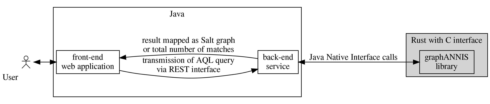

Introduction
The graphANNIS library is a new backend implementation of the ANNIS linguistic search and visualization system.
It is part of the larger system with a web-based front-end, a REST-service (both written in the Java programming language).  As a backend, it is in charge of performing the actual AQL queries and returning the results, which can be either the number of matches, the IDs of the matches or sub-graphs for a specific set of matches.
Data model
The data model and concepts used by graphANNIS are similar to the ones of Salt (see the Salt model guide for more information). Historically, Salt and ANNIS with its query language AQL have been developed in parallel, sharing concepts and ideas how a linguistic corpus should be modeled as a directed labeled graph. Still, there are differences because of the purpose of each model: Salt should represent the annotation and data sources without loosing information while the ANNIS data model transforms the data model to allow an efficient search.
GraphANNIS uses a data model that allows performing searches with AQL (and thus is compatible with its data model). By using graphs, as Salt does, it is more flexible in modeling the data and can be more close to Salt than the relational database scheme of older ANNIS version could be. Some parts of the data model are exposed to the outside, e.g. when a user applies changes to a graph. Others are internal and are used to index structures needed for AQL, but which can be deduced from the information in the public data model.
Representing annotations as graph
Elements of the graph
The following figure gives an overview of the elements of the graphANNIS model, which is based on a directed graph (see Cormen et al. 2009, p. 11681).

GraphANNIS does not partition the data documents like it was done in relANNIS, graphANNIS partitions the corpora into
- information about the nodes and node labels, and
- edges and edge label information which are partitioned again into components.
In this model, each node is internally identified by a unique ID. Node labels consist of a namespace, a name, and a value and are connected to a node by its ID. No explicit representation of nodes exists: If a node exists there must be at least one label for this node. There is a special label named "annis::node_name"2} that can be applied to any node to mark its existence.
GraphANNIS has the concept of components for edges. A component has a type, a name, and a layer. It consists of edges and edge labels. Edges between two nodes are uniquely defined inside a component with the source and target node ID. There can not be more than one edge between the same two nodes inside the same component. Each edge can have multiple edge labels. In addition to the source and target node ID, edge labels also have namespaces, names and values. For one edge, only one edge label having the same namespace and name can exist. Graphs are the aggregation of node labels and edge components.
Corpus structure
GraphANNIS has two kinds of nodes:
- annotation graph nodes and
- corpus graph nodes.
They are both parts of the same graph structure but are distinguished by the special label "annis::node_type".
It can either have the value "node" for nodes belonging to the annotation graph or "corpus" for nodes belonging to the corpus graph.
Nodes that belong to a corpus graph are connected with edges that belong to a component of the type PartOfSubcorpus.
The source node is always the node that is part of the (sub-) corpus, and the target node is the node which is higher in the corpus graph hierarchy.

In this example, each annotation graph node belongs to exactly one document and the corpus graph is a tree. However, the data model allows to add an annotation node to several documents, and a document or sub-corpus can be part of several (sub-) corpora. In this regard, graphANNIS is more flexible than Salt. In addition to "corpus" and "node", you can add your own types of node, e.g. "datasource" for nodes that should not be treated like a document in meta-data searches, but represent a data source like a text.
Tokens
Since AQL has no concept of textual data sources, the leafs of the annotation graph in graphANNIS are the tokens.
Tokens have a special label "annis::tok" which has the spanned text as its value.
Additionally, tokens are connected with edges that belong to a component of type Ordering.

The ordering edges are very similar to the explicit SOrderRelation edges in Salt, except that they are not obligatory but are needed to determine the order of the tokens in the absence of any character index.
They also support multiple tokenizations because there can be more than one component of the type Ordering.
When there are multiple components with this type, the name of the component corresponds to the name of the tokenization and is empty for the default tokenization.
Spans
Spans are nodes that are not a token but cover a set of tokens.
They also implicitly cover the original text that is covered by these tokens.
GraphANNIS expresses these coverage relations by using explicit edges between the spans and each token it covers.
These edges are part of a component of the type Coverage.

Dominance relations
While spans are used to describe non-hierarchical node structures, hierarchical structures like constituent trees are modeled using edges of the type Dominance.

These edges can also have additional labels if the annotation scheme requires it.
In contrast to Salt, where nodes have different types, in graphANNIS, only the edges are typed.
Thus, Dominance edges can be in theory added to any node.
Since they imply text-coverage, these components should be non-cyclic.
Pointing relations
For relations that are not implying text-coverage, edges of type Pointing can be used.
These have the same semantics as the SPointingRelation of Salt and can have additional labels for expressing edge annotations.
The type of a pointing relation in AQLs corresponds to the name of the edge component in graphANNIS.
T. H. Cormen, C. E. Leiserson, R. L. Rivest, and C. Stein, Introduction to Algorithms, 3rd ed. The MIT Press, 2009.
This is a fully qualified representation of the label name which includes the reserved namespace "annis".
Indexes for faster query execution
GraphANNIS uses helper edges to speed-up AQL query execution.
These are automatically created or updated when a graph update is executed via the apply_update(...) function of the CorpusStorage structure.
Users of the API do not have to add these edges by their-self.
Inherited coverage
Dominance relations imply text-coverage and thus any node connected inherits the covered token from its child nodes. Instead of traversing the dominance edges on query time, inherited coverage relations are explicitly added to the nodes.

Left-most and right-most token of a node
These components of type LeftToken and RightToken allow providing faster implementations for some operators that deal with text coverage or precedence.
Their target node is the left-most or right-most covered token of a node.
The covered token are ordered by their position in the chain of Ordering relations.
If there is a path of any length from token \({t_1}\) to \({t_2}\), \({t_1}\) is more "left" than \({t_2}\).

While the coverage edges are similar to the SSpanningRelation, the left and right token edges are inspired from the two columns of the node table in relANNIS (the legacy relational database implementation of ANNIS) with the same name.
Each node of the annotation graph that is not a token must have a left and right token edge because AQL implicitly requires all nodes to be connected to tokens.
Lookup for all left- or right-aligned nodes of a token is possible by accesssing the inverse edges of the LeftToken and RightToken component.
Release checklist
This is a list of steps needed to perform a new graphANNIS release. A release includes the Rust-based core graphANNIS library, but also the language bindings for Java and Python.
GraphANNIS uses semantic versioning and the version numbers for the core and the language bindings should be synchronized. This means that if a language bindings adds a feature, that has been released in the core library before but was not covered by the binding, also the core library might need to release an update with the matching version number (even if it is not releasing any new features by itself).
Core library release
- Make a new release branch
release/<version>from thedevelopbranch for feature releases. If you make a bug-fix release create a branch namedhotfix/<version>from themasterbranch. - If this is a major or minor release, update the link to the Developer Guide documentation in the
README.mdto point to the new version short version, omitting the patch level and with adding a "v" prefix (e.g. https://korpling.github.io/graphANNIS/docs/v1.0/) - Release the branch with the cargo-release plugin
cargo release patchfor hotfixes updates (e.g. 1.0.0 to 1.0.1)cargo release minorfor minor updates (e.g. 1.0.1 to 1.1.0)cargo release majorfor major updates (e.g. 1.1.0 to 2.0.0)
- Merge the release branch both into the master and develop branch then delete the release branch.
- Create the release on GitHub, copy the changelog entry as release notes. Save the release as draft
- Wait for Continuous Integration to finish building the release artifacts for all systems and then publish the drafted release
Python wrapper release
- Make a new release branch
release/<version>from thedevelopbranch for feature releases. If you make a bug-fix release create a branch namedhotfix/<version>from themasterbranch. - Update version information, by
- changing the
versionfield in thesetup.pyfile - specifying the corresponding graphANNIS release tag in the
GRAPHANNIS_VERSIONenvironment variable in.travis.yml - committing the changed files
- changing the
- Download release artifacts from the core library:
./package/download-release-binaries.sh <version-tag> - Test with
python3 -m unittest./doctest_runner.py
- Tag and push the latest commit with the prefix
v, e.g.v1.4.0, merge the release branch both into themasteranddevelopbranch then delete the release branch.
Continuous Integration will automatically deploy all released versions on the master branch.
Java wrapper release
- Start the release process with
mvn jgitflow:release-start - Download release artifacts from the core library:
./misc/download-release-binaries.sh <version-tag> - Test with
mvn test - Finish the release process with
mvn jgitflow:release-finish - Close and Release the staging repository to Maven Central with the Nexus interface: https://oss.sonatype.org/